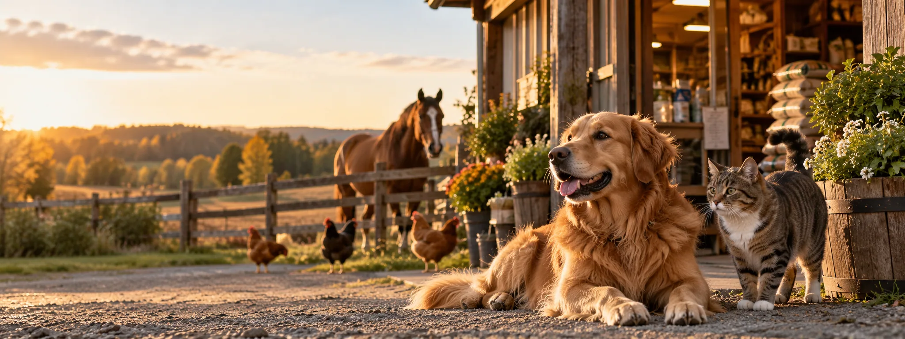

PRODUCT RANGE
All kinds of animals
A broad product mix that reflects the needs of animal owners in homes, acreages and rural communities.

A modern feed and pet supply store built around the everyday needs of animal owners, with the personal service that makes local retail matter.
Neigh-Barks started with a practical challenge: caring for several kinds of animals often meant long drives and stops at multiple stores.
Our goal was to bring feed, pet supplies and everyday animal-care essentials together in a welcoming local store. Now we're interested in connecting with people who see that same need in their community.
One familiar destination for pet owners, horse people, poultry keepers and farming households.
A broad product mix that reflects the needs of animal owners in homes, acreages and rural communities.
Helpful advice and personal relationships that make customers comfortable asking questions.
Consistent presentation and values, while understanding the needs of each local market.
A simple purpose that brings our stores, product choices and community relationships together.

We believe a community store succeeds by understanding the people and animals who live there.
Neigh-Barks began in Beaver County and has grown through relationships, practical products and a welcoming retail experience.
We'd welcome an introductory conversation about your goals and the community you have in mind.
Request franchise information